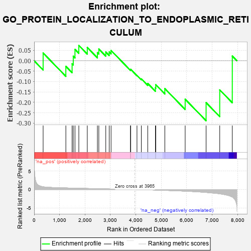
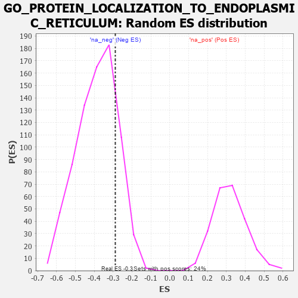

| | | Dataset | 7d |
| Phenotype | NoPhenotypeAvailable |
| Upregulated in class | na_neg |
| GeneSet | GO_PROTEIN_LOCALIZATION_TO_ENDOPLASMIC_RETICULUM |
| Enrichment Score (ES) | -0.2884495 |
| Normalized Enrichment Score (NES) | -0.7456237 |
| Nominal p-value | 0.81710523 |
| FDR q-value | 1.0 |
| FWER p-Value | 1.0 |
Table: GSEA Results Summary

Fig 1: Enrichment plot: GO_PROTEIN_LOCALIZATION_TO_ENDOPLASMIC_RETICULUM
Profile of the Running ES Score & Positions of GeneSet Members on the Rank Ordered List
| PROBE | GENE SYMBOL | GENE_TITLE | RANK IN GENE LIST | RANK METRIC SCORE | RUNNING ES | CORE ENRICHMENT | | 1 | TAPT1 | | | 354 | 0.743 | 0.0371 | No |
| 2 | SRP68 | | | 1247 | 0.439 | -0.0268 | No |
| 3 | SPCS2 | | | 1493 | 0.391 | -0.0147 | No |
| 4 | SEC62 | | | 1539 | 0.385 | 0.0219 | No |
| 5 | SRP14 | | | 1606 | 0.373 | 0.0546 | No |
| 6 | GPAA1 | | | 1757 | 0.344 | 0.0735 | No |
| 7 | SRP72 | | | 2090 | 0.292 | 0.0638 | No |
| 8 | UBAC2 | | | 2488 | 0.229 | 0.0390 | No |
| 9 | SRP54 | | | 2544 | 0.220 | 0.0563 | No |
| 10 | SRP19 | | | 2817 | 0.181 | 0.0420 | No |
| 11 | RAB10 | | | 2952 | 0.157 | 0.0424 | No |
| 12 | SEC63 | | | 3025 | 0.146 | 0.0493 | No |
| 13 | SRPRA | | | 3788 | 0.029 | -0.0433 | No |
| 14 | SPCS1 | | | 3795 | 0.028 | -0.0410 | No |
| 15 | SGTB | | | 4044 | -0.015 | -0.0706 | No |
| 16 | GBF1 | | | 4215 | -0.044 | -0.0871 | No |
| 17 | LRRK2 | | | 4467 | -0.087 | -0.1091 | No |
| 18 | SRPRB | | | 4769 | -0.151 | -0.1303 | No |
| 19 | RTN4 | | | 4783 | -0.154 | -0.1150 | No |
| 20 | RER1 | | | 5139 | -0.235 | -0.1339 | No |
| 21 | VAPA | | | 5939 | -0.449 | -0.1850 | No |
| 22 | PDIA2 | | | 6762 | -0.792 | -0.2014 | Yes |
| 23 | ANK2 | | | 7298 | -1.170 | -0.1401 | Yes |
| 24 | GRIK5 | | | 7792 | -2.044 | 0.0225 | Yes |
Table: GSEA details [plain text format]

Fig 2: GO_PROTEIN_LOCALIZATION_TO_ENDOPLASMIC_RETICULUM: Random ES distribution
Gene set null distribution of ES for GO_PROTEIN_LOCALIZATION_TO_ENDOPLASMIC_RETICULUM